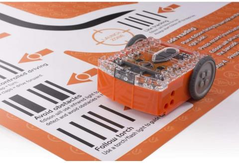

La robótica inicio en la industria textil en el siglo XVIII, por Joseph Jacquard, el cual inventó una maquina textil programable mediante tarjetas perforadas en 1801.

Innovaciones en la robótica.
La mayor parte de la innovación y las empresas emergentes ligadas a la robótica se encuentran en países de altos ingresos, a excepción de China, que alberga algunas de las empresas de robótica que más rápido están creciendo, tales como DJI (una empresa de drones), Siasun y Estun.
El uso de patentes en la robótica surgió en los años 80, cuando la extendida automatización en las fábricas hizo que se cuadriplicaran las solicitudes de patente (véase el gráfico 1). Las solicitudes de patente repuntaron de nuevo a mediados del primer decenio del siglo veintiuno, con la entrada en escena de nuevos avances en robótica.
Secretos comerciales y de la robótica.
La complejidad tecnológica de los sitemas robóticos conlleva a pequeñas empresas que quieren proteger sus innovaciones opten por la vida de los secretos comerciales en primera estancia. Esto tiene sentido por varias razones
Resulta muy complojo acceder a los robots más caros, haciendo casi imposible la ingenieria inversa.
Muchas pequeñas empresas quieren evitar el coste que entraña el presentar solicitudes de patente
En el pasado, aquellas empresas que deseaban proteger sus avances tecnológicos mediante patente (sobre todo aquellos a décadas vista de ser usados en productos comercializables) gastaron grandes cantidades de dinero en patentes poro apenas obtuvieron beneficios, ya que llegado el momento de la comercialización las patentes ya habían vencido
La movilidad laboral en el sector de la robótica es elavada, así que muchas empresas hacen valer cláusulas restrictivas cuando sus trabajadores son contratados por la competencia La incertidumbre que rodes is patentabilidad de los programas informaticos en las distintas jurisdicciones puede decantar aún más la balanza a favor de la protección en el marco
El inicio de la era de la robótica.
Los años 80 supusieron una explosión en el desarrollo de la robótica y su década es considerada como el inicio de la Era Robótica, y es que su fabricación y venta aumentaron en un 80%. Se considera que empezó a sembrarse en esta época la semilla que luego haría surgir la robótica inteligente que hoy en día conocemos. Con la tecnología adecuada y el uso de inteligencia artificial, los robots han ido ganando independencia en sus tareas y han ido cooperando con el ser humano, tomando decisiones en tiempo real.
Primeros robots industriales de gran tamaño.
No fue hasta mediados del siglo XX, tras el fin de la Segunda Guerra Mundial, cuando se empezaron a utilizar los primeros robots industriales de gran tamaño. Estaban destinados a tareas pesadas y repetitivas que consistían en movimientos simples.
A principios de los años 60 (1961) la compañía estadounidense Unimation, propiedad de Joseph Engelberger y George Davol, dirigió el desarrollo del primer robot de transferencia programable.
¿Qué se puede conseguir con la robótica industrial?
Automatización de procesos.
Picking de piezas de posiciones fijas.
Montaje de piezas pequeñas con elementos pre-posicionados.
Realización de procesos de soldadura y atornillado.
Dotar de movimientos a elementos estáticos.
Transporte de piezas.
La robótica industrial.
Es un campo de la ingeniería que se ocupa de la definición, diseño, desarrollo y fabricación de robots industriales que automatizan el trabajo de las personas, es decir, ejecutan sus movimientos en una cadena de fabricación o producción industrial y realizan sus tareas de manera más rápida, precisa, sin descanso y evitando el peligro para las personas.
Aplicaciones y usos de los robots en la industria.
En el campo sanitario se utilizan robots industriales o sistemas automatizados para facilitar el trabajo de estos profesionales en actividades que requieren de una gran precisión y donde un error puede ser fatal para la vida de las personas, como por ejemplo en la realización de cirugías.
En la industria manufacturera, como por ejemplo en la del automóvil, para aumentar la productividad y la calidad, automatizando las tareas repetitivas y sencillas de la cadena de producción.
En la actualidad.
En la actualidad, los perfiles o roles profesionales relacionados con la robótica industrial o la automatización tienen cada vez una mayor demanda en el mercado. De manera general, se buscan personas de titulaciones STEAM y que tengan conocimientos de programación tanto a alto como a bajo nivel, así como conocimientos de microcontroladores, autómatas programables (PLCS, FPGA, etc.) y demás tecnologías de automatización industrial. Se valora también en este tipo de profesionales los conocimientos en electrónica industrial.
Actualmente, los principales puestos de trabajo en este sector son:
Ingenieros o técnicos de programación de autómatas.
Ingenieros o técnicos de robótica industrial.
Ingenieros o técnicos de SCADA.
Técnicos de mantenimiento de sistemas de robótica industrial.